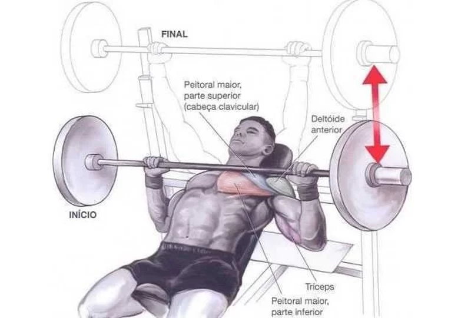

Exercícios para peito:
Supino inclinado com barra
Primeiramente, incline o banco entre 30 e 45 graus. Em seguida, sente-se no banco e retire a barra do suporte logo atrás de você. Use a pegada aberta e pronada (com as palmas das mãos viradas para a frente). Não esqueça de manter os pés no chão durante todo o movimento.
